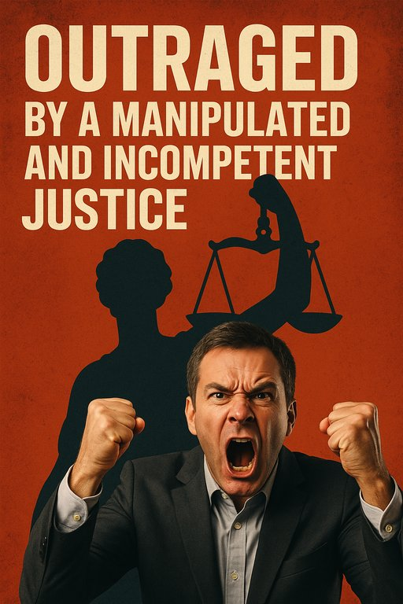

Publicado em 2025-06-10 09:52:18
🇵🇹
Como o Sistema Português Protege os Poderosos e Trai os Cidadãos
📌 Introdução
Em Portugal, a Justiça tem duas velocidades: uma lenta e ineficaz para os crimes de colarinho branco, outra implacável e célere para os pequenos delitos do cidadão comum. Enquanto o "cartel da banca" caminha para a prescrição, um desempregado que rouba um pão vai a julgamento em semanas. Isto não é justiça – é apartheid social.
O recente arquivamento de facto do "cartel da banca" pelo Tribunal Constitucional é um escândalo jurídico:
"A lei é como a teia de aranha: apanha os mosquitos, mas deixa passar os pássaros."
(Provérbio popular adaptado à realidade portuguesa)
Como funciona o sistema que protege as elites?
📌 Passo 1: Crimes complexos são investigados durante uma década (ver: BES, Sócrates, submarinos).
📌 Passo 2: Quando finalmente há acusações, os réus recorrem até à exaustão.
📌 Passo 3: A prescrição chega como um deus ex machina – salvando os poderosos no último ato.
Dados que envergonham:
A mudança exige coragem cívica, mas é possível:
✅ Exigir a criminalização do enriquecimento ilícito (como já acontece noutros países da UE).
✅ Acabar com os prazos de prescrição para crimes económicos graves.
✅ Criar um tribunal especializado em corrupção e crime financeiro.
✅ Apoiar o jornalismo investigativo – a última trincheira da verdade.
Aos que dizem "nada vai mudar", respondo com Fernando Pessoa:
"Não desistir é a única forma de garantir a derrota da resignação."
Este artigo não é um lamento – é um chamado à ação.
🔗 Partilha. Debate. Exige.
O futuro dos teus filhos merece mais do que as migalhas deste sistema corrompido.
📌 Artigo de Francisco Gonçalves
Cidadão indignado, avô/filho de um Portugal que ainda pode renascer.
🖋️ Nota do Blog:
Os comentários estão abertos. Use a voz que o sistema quer calar.
"Quando a toga se confunde com o disfarce e o martelo do juiz ecoa ao ritmo dos interesses ocultos, já não há justiça — há encenação. E o povo, esse, é mantido no banco dos réus da mentira institucionalizada.”